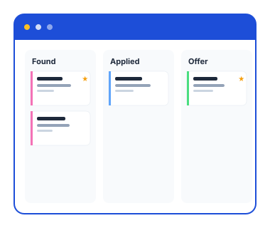
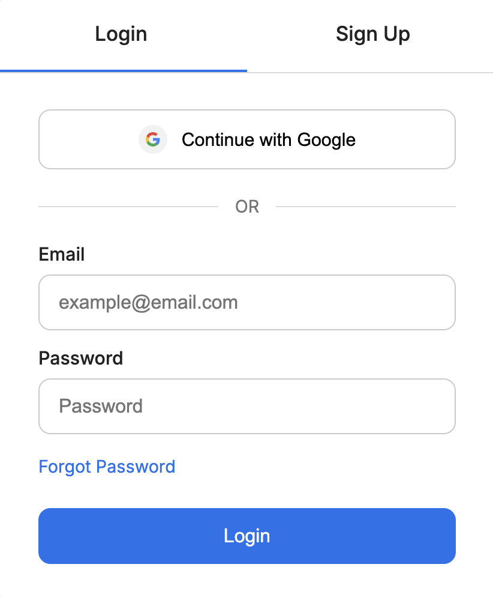
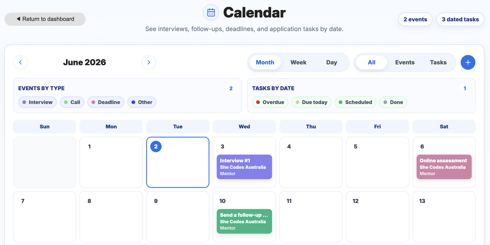
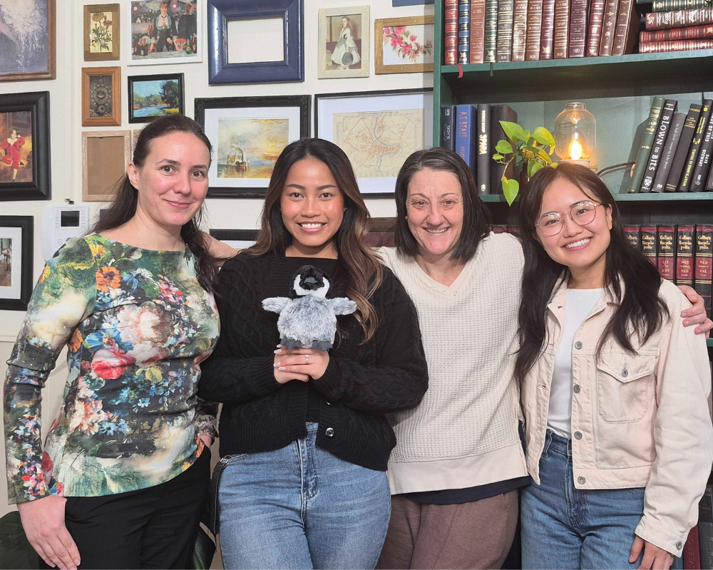

A collaborative full stack application designed to help job seekers organise applications, stay motivated, and manage their job search journey.
For the final sprint of the She Codes Plus Program, I worked as part of a team, the Programmer Penguins, to develop Job Tracker, a job application management platform for our client, Vanessa Gurie, a health technology and applied AI innovator.
Job hunting can be stressful and overwhelming, particularly for recent graduates and career changers managing multiple applications across different platforms. Our challenge was to create a centralised application that helps users organise their job search while providing motivation and support throughout the process.
Job Tracker provides one visual home for every application, helping users spend less time on administration and more time focusing on their job search.

Pulling updates from Git frequently resulted in migration conflicts and database schema mismatches across our four development environments.
We addressed this challenge through disciplined Git workflows, careful migration management, and strong communication around database changes.
We initially explored integrating directly with platforms such as LinkedIn, Seek, and Indeed to automatically populate application details.
Due to API restrictions, paid access requirements, and anti-scraping protections, we developed an alternative solution that extracts key information from job posting URLs and populates the minimum required fields automatically.



A huge thank you to my teammates Maria, Danni, and Sara. This project would not have been possible without their hard work, collaboration, and support throughout the six-week sprint.
* The testimonial examples included within the application are fictional. Any resemblance to actual persons is purely coincidental.